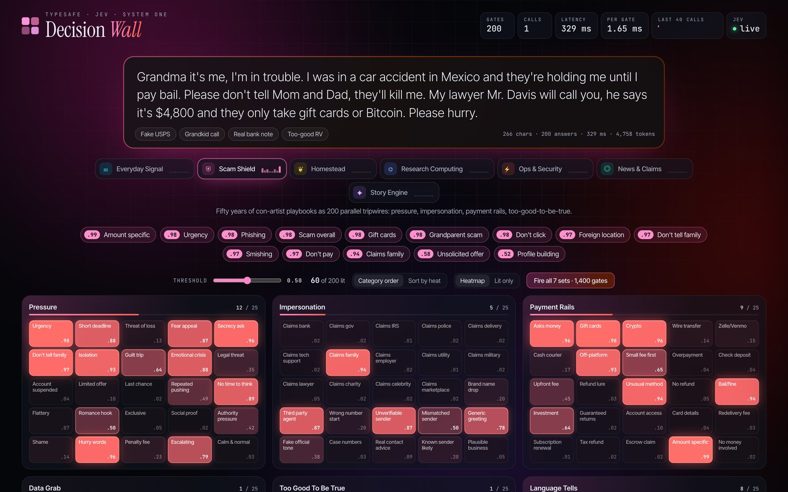
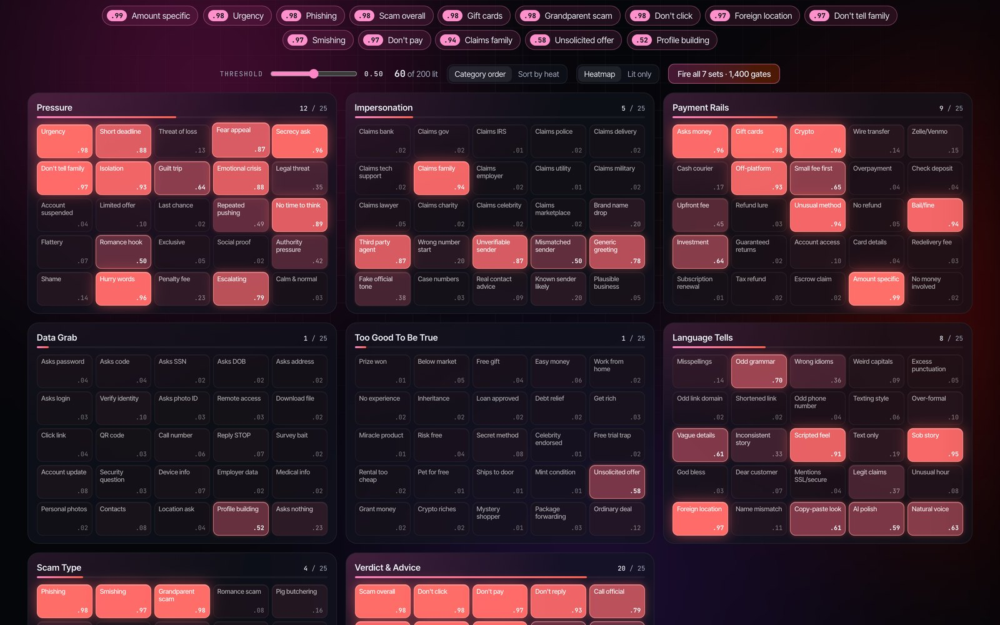
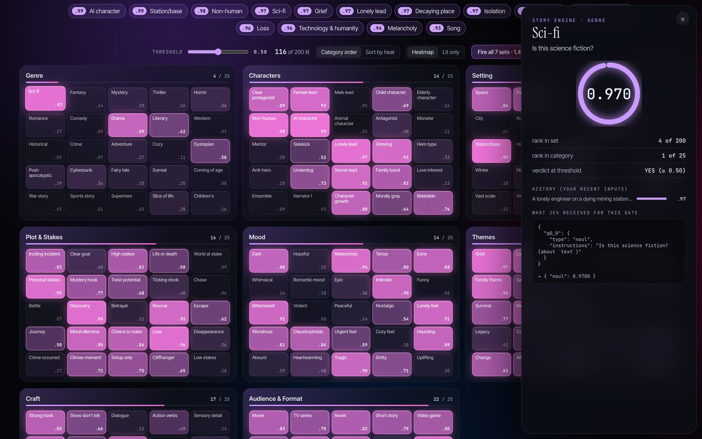
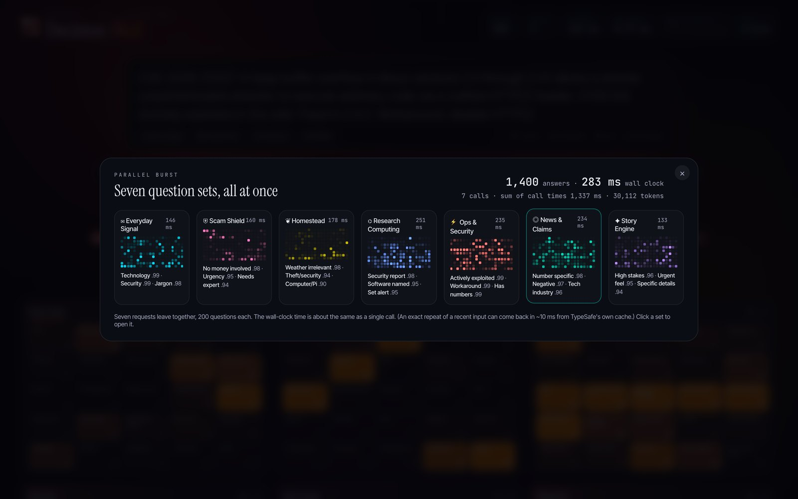

Ask wide, not deep
Jev answers questions rather than writing text. Asking 200 questions about one text costs nearly the same as asking one: about 185 ms for 1, about 200 ms for 50, about 150–300 ms for 200.
Open source · TypeSafe Jev · System One
Type anything. Two hundred yes/no judgments light up as a live heatmap, all answered in a single parallel call to Jev. It's the fastest way to feel what a System One model does.
70-second demo, recorded live against the real API. Every number on screen is a real Jev answer.
Jev answers questions rather than writing text. Asking 200 questions about one text costs nearly the same as asking one: about 185 ms for 1, about 200 ms for 50, about 150–300 ms for 200.
Every cell is a calibrated probability. Slide the threshold and the wall changes instantly with no new call. The model gives the evidence once; your code decides what counts.
A tiny Node server holds your key and proxies the calls, with a cache, a daily token cap and a usage log. The browser never sees the key.




Each is exactly 200 unique questions in 8 categories, with sample texts to try. Writing your own is one JavaScript file.
Node 20+ and a TypeSafe API key. No npm install.
# clone
git clone https://github.com/charles-forsyth/jev-decision-wall.git
cd jev-decision-wall
# add your key (.env is git-ignored)
cp .env.example .env
# run
node server.js # → http://127.0.0.1:8770A full wall is about 4,000 input tokens, roughly $0.0002 at TypeSafe's published price. A daily cap is on by default. Hosting for a team? The repo includes a Cloud Run + Google sign-in deploy script.